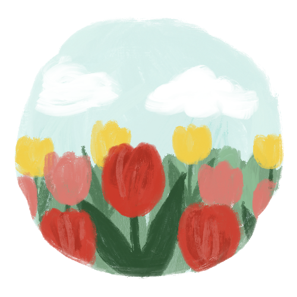

main
Flowerpot
about

마음의 꽃집에 오신 것을 환영해요!
우리는 가끔, 어쩌면 자주, 소중한 사람에게 꽃을 선물하곤 합니다.
소중한 사람에게 꽃을 선물할 때 꽃말을 보고 고른 적이 있나요?
어울리는 꽃을 선물한 적은요?
마음의 꽃집에서는 여러분의 마음으로 피운, 소중한 사람에게 딱 걸맞는 꽃을 보여드려요.
그 꽃은 소중한 사람과 꼭 닮았거나, 여러분이 그 사람에게 전하고 싶은 말을 담고 있을 거예요.
그럼, 천천히 둘러보고 즐겨주세요!